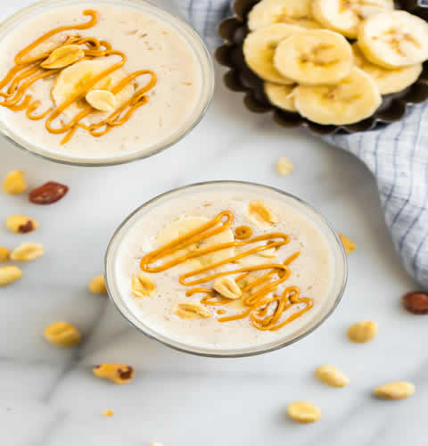

Smoothies |
Ingredients |
Benefits |
BERRY BEET
|
- 1/2 cup almond milk,
- 1/2 cup plain low-fat yogurt,
- 1 tsp honey,
- 1 cup mixed frozen berries,
- 1 cup freshly cooked beets,
- 3 to 5 ice cubes.
|
- Beets are low in calories and a great source of nutrients, including folate, potassium, vitamin C, and more.
- Beets may help lower blood pressure.
- Antioxidant party! Beets and blueberries are both high in antioxidants, so you are getting a double dose of these super stars. Beet Smoothie detox time.
- Beets are high in fiber, so this smoothie will keep you satisfied. If you are considering a Beet Smoothie for weightloss, this recipe could be a good option for you.
|
GREEN GOODNES
|
- 1 cup almond milk,
- 1 cup baby spinach leaves,
- 1 cup kale leaves,
- 1-1/2 cup frozen pineapple chunks,
- 1/2 ripe banana,
- 1 apple.
|
- Green Goodness Smoothie, a highly nutritious and energy rich green vegetable and fruits drink, is an easy to prepare and palate satisfying experience.
- Apart from spinach, mint and various fruits, this recipe also uses kale, an antioxidant, anti cancer nutrients rich leafy vegetable .
|
PUMPKIN BANANA
|
- 1/2 cup non-fat vanilla yogurt,
- 1/2 cup almond milk,
- 1/2 cup pumpkin puree,
- 1-1/2 tsp maple syrup,
- 1 ripe banana,
- 1/4 tsp ground cinnamon,
- 3 to 5 ice cubes.
|
-
Pumpkin: It has tons of fiber and protein which makes this a healthy power smoothie.
- It is loaded with ton's of protein and fiber. Rich in antioxidants and high in Vitamin A.
- Banana: They are a good source of potassium. Helps to regulate blood pressure and is heart healthy.
|
RASPBERRY SMOOTHIE BOWLS
 |
- 1 c. frozen raspberries
- 1/2 peeled, cooked beet
- 6 tbsp. unsweetened almond milk
- Assorted berries,
- chopped roasted almonds,
- granola.
|
- Raspberries are low in calories but high in fiber, vitamins, minerals and antioxidants.
- They may protect against diabetes, cancer, obesity, arthritis and other conditions and may even provide anti-aging effects.
- Raspberries are easy to add to your diet and make a tasty addition to breakfast, lunch, dinner or dessert.
|
STRAWBERRY SMOOTHIE BOWLS
 |
- 1 c. frozen strawberries
- 1 c. chopped frozen cucumber (no skin)
- 2 tbsp. carrot juice
- Fresh strawberries,
- freeze dried strawberries,
- chopped pistachios for serving
|
-
These potent little packages protect your heart, increase HDL (good) cholesterol, lower your blood pressure, and guard against cancer.
- Packed with vitamins, fiber, and particularly high levels of antioxidants known as polyphenols, strawberries are a sodium-free, fat-free, cholesterol-free, low-calorie food.
|
PEACH SMOOTHIE BOWLS
|
- 2/3 c. frozen peaches
- 1/2 c. chopped summer squash
- 1/4 c. coconut water
- orange pieces,
- pepitas,
- toasted coconut chips for serving
|
- Packed With Nutrients and Antioxidants.
- Aid Digestion.
- Improve Heart Health.
- Protect Your Skin.
- Prevent Certain Types of Cancer.
- Reduce Allergy Symptoms.
- Widely Available and Easy to Add to Your Diet.
|
PEANUT BANANA CINNAMON SMOOTHIE
 |
- 1 cup vanilla soy milk (or skim milk),
- 1 large banana (peeled and cut into chunks or use a previously frozen banana)
- 2 tablespoons peanut butter (preferably natural)
- 1/2 teaspoon cinnamon (plus more for sprinkling)
- Optional: 1 teaspoon honey (or turbinado sugar),
- 3 ice cubes
|
- Bananas are also a good source of potassium, which is essential for kidney function, and may help to lower blood pressure and the risk of heart disease.
- Peanut Butter is about 25% protein, so it contributes 8 grams of protein to this dairy-free smoothie.
- Cinnamon contains antioxidants with anti-inflammatory effects.
|